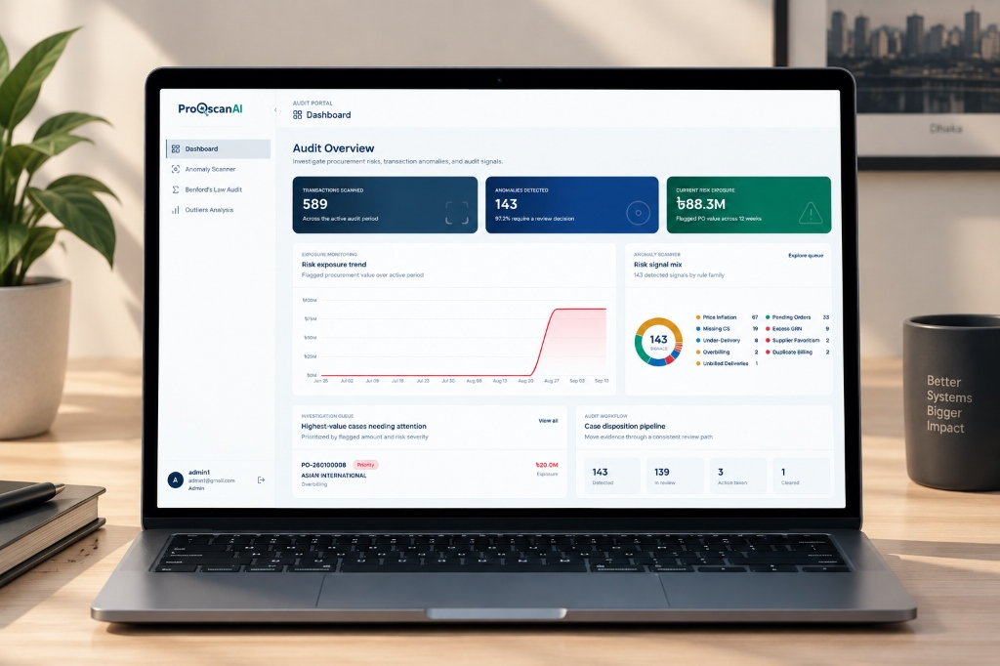
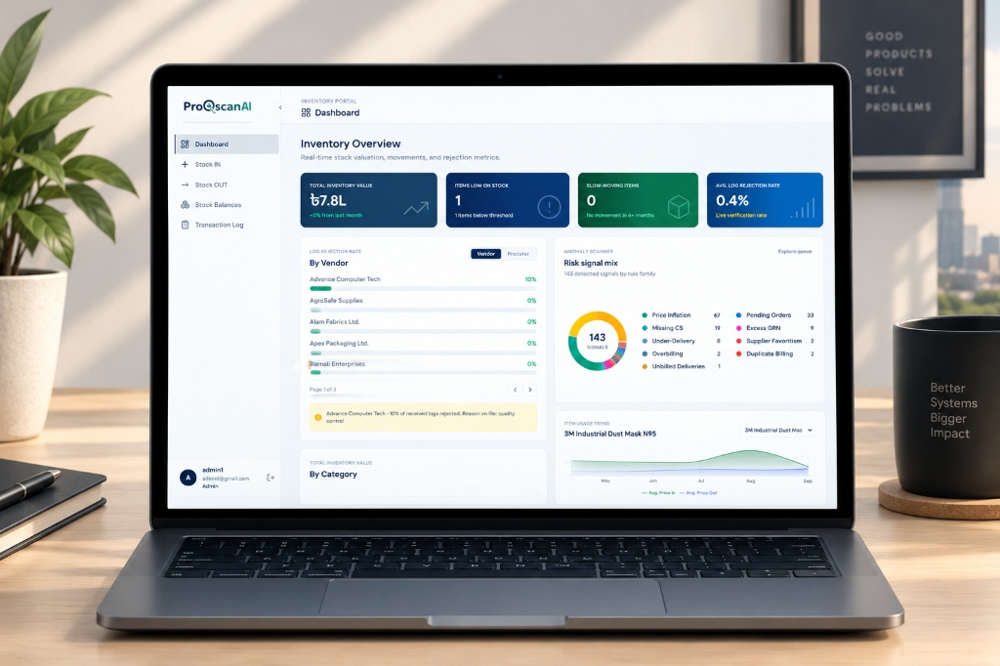
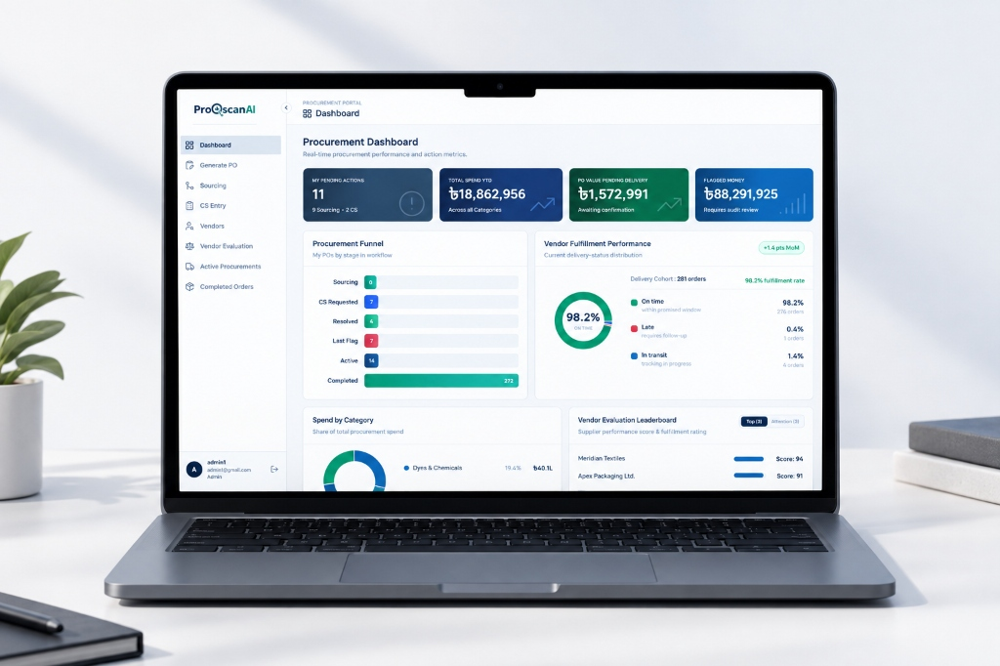

Forensic Engine
Forensic Anomaly Scanner & Benford's Law Audit

Designing a unified 4-engine operational ecosystem that eliminates organizational data silos, enforces automated 3-way matching, and surfaces real-time forensic risk signals before payments clear.

ProQscan AI is an enterprise procurement management and forensic audit platform built to oversee capital expenditure across purchasing, warehouse storage, audit verification, and executive intelligence. Rather than forcing organizations to bridge disparate third-party tools, the product establishes an unbroken operational trail where every purchase order, goods receipt note (GRN), and vendor invoice is reconciled against the same live data layer.
In traditional enterprise environments, departments operate in disconnected silos. Purchasing creates purchase orders in an isolated ERP; warehouse receiving logs physical shipments on paper or localized spreadsheets; and accounting pays invoices blindly without verifying what physically crossed the loading dock. By the time audits happen months later, fraudulent overbilling, duplicate invoices, and unauthorized vendor price inflation are already paid out.
Information gaps between departments hide discrepancies until post-audits occur.
A unified data layer reconciling requisitions, warehouse goods receipts, and invoices in real time.
A major UX hurdle was preventing the interface from becoming an overwhelming generic spreadsheet. I structured dedicated workspaces tuned specifically to each operator's tasks:
Needs to generate POs, parse Comparative Statements (CS) across multiple vendor quotes, and spot unit price inflation before approvals.
Operates in noisy warehouse environments. Needs rapid keyboard/barcode logging, star-rated quality notes, and instant GRN generation.
Investigates flagged transactions. Needs drill-down evidence drawers, Benford's Law digit tests, and immutable audit disposition tracking.
Monitors high-level capital exposure. Needs aggregate spend vs. risk curves, vendor concentration metrics, and instant departmental drill-downs.
The system maps the end-to-end operational lifecycle so every transaction leaves a clear, tamper-proof paper trail:
Department files item request. System checks current warehouse stock to prevent duplicate orders before launching vendor quote comparisons.
Lowest compliant vendor selected via Comparative Statement. PO is dispatched; active tracking monitors lead times and transit status.
Physical goods arrive. Warehouse records received counts, damage notes, and bill numbers. System verifies PO vs. GRN line by line.
Invoice passes through 9 automated risk vector checks and Benford's Law distribution test. Cleared bills move to finance; anomalies halt for review.
Each portal provides focused functionality while sharing real-time relational state across the database:
Enterprise tools often fail because they dump uncurated spreadsheets onto users. I structured ProQscan AI around progressive disclosure, unambiguous risk semantics, and zero-confusion reconciliation:
Rather than decorative colors, every hue in ProQscan AI has an unambiguous operational meaning:
• Emerald Green: Verified 3-way match, healthy stock, on-time delivery.
• Amber Orange: Pending approval, unbilled deliveries awaiting verification.
• Crimson Red: Critical anomalies, Benford manipulation alerts, duplicate billing.
• Navy Blue: Strategic governance metrics and executive intelligence indicators.
Instead of navigating away to inspect flagged transactions, auditors click any anomaly row to open a slide-over evidence drawer. This reveals the original PO, supplier quotation, and dock GRN without losing the auditor's scroll position in the primary queue.
Warehouse clerks logging incoming deliveries need speed. I optimized the "Log Delivery" form for sequential keyboard navigation (Tab-index ordering, numeric auto-formatting, and instant barcode scan population) to minimize mouse dependency.
Every record maintains explicit bidirectional links: a purchase order displays its related GRN and invoice; a flagged invoice links directly to its receiving condition stars and the originating requisition officer.




To maintain visual coherence across all four engines, I established a centralized design tokens system:
Headings & UI: Clean geometric sans-serif (Manrope / Plus Jakarta Sans) for effortless scanning of dense dashboards.
Financial Numerals: Tabular monospace figures for invoice amounts, PO numbers, and ledger columns to ensure vertical decimal alignment across multi-row comparison tables.
Standardized pill badges (Verified, Pending, Flagged, Cleared), high-density data table rows with hover elevation, sticky column headers, and uniform pagination controls shared across all four operational portals.
The project successfully transitioned an enterprise organization from fragmented spreadsheets to a connected digital platform:
Seamless role-based workspaces connecting Procurement, Warehouse Inventory, Forensic Audit, and Executive Intelligence.
End-to-end verification linking PO line items, physical receiving receipts (GRN), and accounting invoices.
Proactive anomaly detection catching price inflation, duplicate billing, and Benford digit manipulation before payment.
Standardized components, high-density data tables, and strict status color semantics ready for future operational expansions.
"Designing for enterprise operations taught me that true UX excellence in data-heavy platforms isn't about making things look minimal—it's about making dense, high-stakes information scan effortlessly. When millions of taka and operational fraud are on the line, an operator shouldn't have to hunt for discrepancies. Good design brings the anomaly directly to their attention with zero ambiguity."